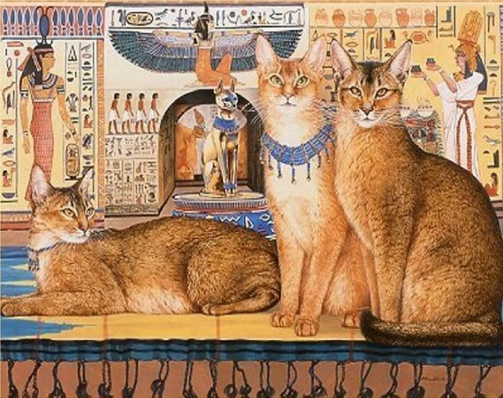

Кошки: история появления
Многие утверждают, что первыми кошек приручили и одомашнили древние египтяне, однако общего мнения на этот счет нет. Считается, что история появления кошек рядом с человеком начинается примерно 10-12 тысяч лет назад и связана с тем, что эти животные сблизились с людьми именно с тех пор, когда последние начали вести оседлый образ жизни. Это, кстати, делает кошек просто уникальными среди всех зверей, многие из которых до сих пор стараются держаться от людей подальше.
Много споров вызывает также история происхождения кошек, которая тоже весьма неоднозначна. Самое распространенное мнение, которое, кстати, особенно прижилось в России, заключается в том, что единым предком современных кошек является переднеазиатская североафриканская степная кошка, которая была одомашнена вовсе не в Египте, а в Нубии, и произошло это около 4 тысяч лет назад. Только после этого кошки попали в Египет, а затем появились и в Азии, где успешно скрестились с лесными бенгальскими видами.
Кошки в истории Египта
История Египта очень тесно связана с кошками, ведь считается, что именно египтяне первыми одомашнили этих животных, а их значение в жизни страны было просто огромным. К тому же, некоторые исследователи считают, что домашняя кошка вообще впервые появилась именно в Древнем Египте - в результате скрещивания камышового кота и евро-африканских диких кошек.
В целом, история египетских кошек начинается еще во втором тысячелетии до нашей эры: именно этим временем датируется древнейшее изображение домашних кошек, которое было найдено. Причина же, по которой эти уникальные животные заняли такое важное место в истории Египта, проста: это государство испокон веков было аграрным, и именно кошки могли спасти его урожаи от грызунов.
История кошек в России
Лапы первой домашней кошки ступили на русскую землю в 11 веке, а на землях, ныне относящихся к югу Украины, они и вовсе появились в 7-8 столетиях, о чем свидетельствуют найденные кошачьи останки. Впрочем, судя по некоторым данным, на землях, относящихся ныне к Одесской и Черкасской областям Украины, первые кошки появились уже даже во 2-5 веках, хотя в те времена они были большой редкостью.
Как бы то ни было, известно, что животное на Русь привезли мореплаватели, и успех странного пушистого зверя был просто ошеломительным! В ходу сразу же появилась пословица «Без кошек нет избы», а безопасность и жизнь животных было решено защитить на уровне законодательства. Для этих целей придумали закон, который, в частности, предусматривал солидный штраф за кражу кошки. Удивительно, но его сумма была даже больше, чем размер штрафа, положенного за кражу коровы или угон вола.